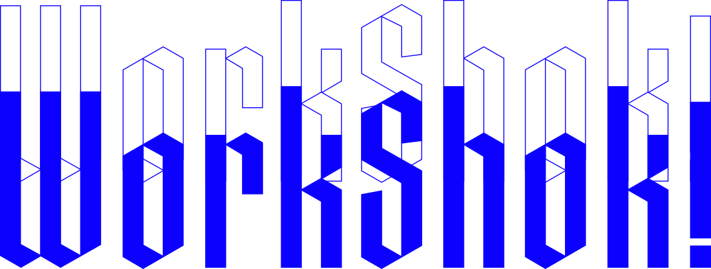

SINCE 2018 UNCONVENTIONAL HUB
XXX 2026

Workshok — Workshop AI, Design, Grafica e Architettura ad Ascoli Piceno · SAAD Workshop Week 2026Architecture & Design Hub
SWW CORSI #26// EDIZIONE—
// QUANDO—
// DOVE—
// FORMATO—
I Corsi
About
Progettiamo imparando facendo. Niente teoria a vuoto, niente slide — solo il progetto reale, dal brief alla resa finale.
Workshok nasce come laboratorio sperimentale: format brevi e intensi, dove l'errore fa parte del processo tanto quanto il risultato. Alcuni workshop li facciamo online, altri dal vivo.
Dal 2018 mettiamo in connessione studenti, docenti professionisti e territorio. Tra i format dal vivo, il più conosciuto è la SAAD Workshop Week, ad Ascoli Piceno.